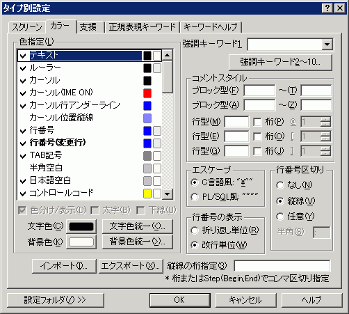

タイプ別設定 『カラー』プロパティ
『スクリーン』 『カラー』 『支援』 『正規表現キーワード』 『キーワードヘルプ』

<色指定>
色の設定を変更できます。
ほかに、カーソル行アンダーライン（下線）、改行文字、タブ、ルーラー、行番号などの表示・非表示を切り替えられます。
・色指定の種別名をリストから選ぶ
・リストの下に当該の色設定が表示されるのでこれを変更する
色分け/表示 … 色分けや表示をするかどうかを指定
太字 … 太字で表示するかどうかを指定
下線 … 下線付きで表示するかどうかを指定
[文字色]ボタン
色ボタン。押下すると、文字色（前景色）の変更が可能
[背景色]ボタン
色ボタン。押下すると、背景色の変更が可能
[文字色統一],
[背景色統一]ボタン
押下すると
文字色（背景色）統一ダイアログを表示
指定の文字色（背景色）を現在の文字色（背景色）と同じに変更する
リストのアイテムを直接触って変更することもできます。
・ダブルクリックすると、太字で表示するかどうかを変更可能
・右クリックすると、下線かどうかを変更可能
・チェックマークをクリックすると、色分けや表示をするかどうかを変更可能
・文字色（前景色）をクリックすると、文字色（前景色）の変更が可能
・背景色をクリックすると、背景色の変更が可能
[インポート], [エクスポート]ボタン
色設定ファイルのインポート/エクスポートができます。
インポートは色設定ファイルを読み込み、現在の色設定に反映させます。
エクスポートは現在の色設定をファイルに書き出します。
エクスポートした色設定ファイルは、後でインポートしたいときに使います。
強調キーワード1
コンボボックスから、強調キーワードのセットを選択できます。
強調キーワードのセットは追加/削除/編集できます（共通設定 『強調キーワード』プロパティ）。
[強調キーワード2〜10]ボタン
ボタンを押すと、ダイアログウィンドウが表示され、強調キーワード1から強調キーワード10までを選択することができます。選択後にOKを押すと、そのときの変更が「設定ウィンドウ」に適用されます。ただし、タイプ別設定 『カラー』プロパティのダイアログでOKを押さなければ、設定が適用されませんので注意してください。(sakura:1.5.1.0以降)
番号を飛ばして設定する(2、5だけ設定する等)と、強制的に詰めて設定されます。このとき、対応する色設定も同時に詰められます。
<コメントスタイル>
ある範囲をコメントとする範囲指定型の「ブロックコメント」と、行の中のある記号から後ろをコメントとする「行コメント」の2種類を設定できます。
ブロック型
「ブロックコメント」を認識する際の始点・終端記号をここに定義できます。
英大文字小文字の区別はしません。
イレギュラーな使い方としてC/C++で、#if 0〜#endif を設定するとコメントアウトに利用できます。ただし複数の #endif の出現には対応できませんので注意して下さい。
(例：C/C++の場合) /*〜*/
(例：HTMLの場合) <!--〜-->
行型
「行コメント」を認識する際の始点記号をここに定義できます。
英大文字小文字の区別はしません。
COBOLやFORTRAN77等で、コメントの桁位置の指定が必要な場合は「桁」チェックボックスをチェックしその桁数(1-1000)を設定します。
(例：C++の場合) //
(例：PL/SQLの場合) --
(例：COBOLの場合) * 桁指定 7
<エスケープ>
シングルクォーテーションやダブルクォーテーションで囲まれた文字(列)定数の範囲を認識させるために、文字(列)定数の中でシングルクォーテーションやダブルクォーテーションを表現する方式を選択します。
◎C言語風："\""・・・ \" や \' のように引用符の前に\記号を付ける
○PL/SQL風：""""・・・ "" や '' のように引用符を2回連続して書く
<行番号の表示>
行番号の表示を「○折り返し単位」と「◎改行単位」から選べます。
<行番号区切り>
行番号とテキストを区切る部分の表示を設定できます。
○なし・・・何も表示しない
◎縦線・・・縦線で区切る
○任意・・・任意の半角1文字で区切る
<縦線の桁指定>
桁固定の縦線を表示します。(sakura:1.5.9.0以降)
書式1： ステップ桁数(開始桁位置, 終了桁位置)
書式2： 任意の桁1, 任意の桁2, 〜任意の桁n
「5(6,21)」と「6, 11, 16, 21」では同じ結果が得られます。
 色指定リストの解説
色指定リストの解説
カーソル
IMEのOffのとき、「カーソル」で指定した色でカーソルが点滅します。
IMEのOnのとき、「カーソル(IME ON)」で指定した色でカーソルが点滅します。
半角空白
ONにすると半角スペースを「 」の代わりに「U」の下半分で指定した設定で表示します。
改行記号
ON/OFFは矢印を表示するかしないかを決めます。
OFFにした場合は矢印を表示しませんが、常に改行記号の背景色・下線の設定で作画されます。
URL
色分けをOFFにすると、ダブルクリックによるURLジャンプが無効になります。
正規表現キーワード1〜10
タイプ別設定 『正規表現キーワード』プロパティで設定した正規表現で強調表示します。
DIFF差分(追加、変更、削除)
DIFFで変更になった行の行番号を指定したスタイルで表示します。この設定のON/OFFに関係なく行番号の左側の記号は表示されます。
ブックマーク
ブックマークに指定されている行の行番号を指定したスタイルで表示します。
OFFにすると、行番号の左隅に縦線がつくだけになります。
対括弧の強調表示
強調表示される括弧の種類は、「対括弧の検索」と同じです。カーソルの直後の括弧(なければ直前の括弧)と対応する括弧を強調表示します。
表示画面内で対括弧を見つけられなかった場合は、強調表示されません。
色設定の優先順位
テキストの優先順位は次のようになっています。上のほうが優先です。
・対括弧の強調表示
・検索文字列
・TAB記号
・正規表現キーワードの色分け1〜10 *1
・全角空白、半角空白
・コメント(行)
・コメント(ブロック)
・シングルクオーテーション
・ダブルクオーテーション
・URL
・半角数値
・強調キーワード1
・強調キーワード2
・改行記号 *2
・コントロールコード
・テキスト
*1 正規表現キーワード間の順位は、色設定ではなく、タイプ別設定 『正規表現キーワード』プロパティで決まります。
*2 改行記号のON/OFFは矢印を表示する/しないを決めるもので、常に改行記号の背景色・下線の設定は有効となります。